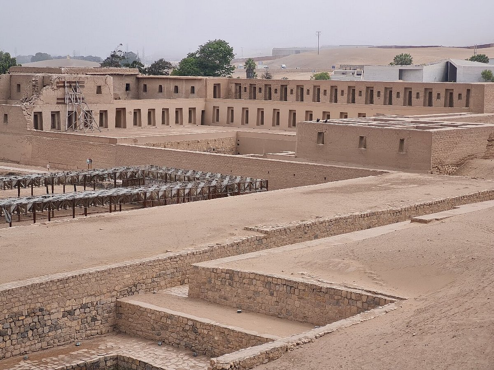

Lima: Tour arqueológico de Pachacamac y Barranco
Precio: $80.00
Ubicación: Ver en Google Maps
Descripción
Descubre la fascinante historia de Pachacamac, un importante centro arqueológico preincaico, y explora los encantos del distrito de Barranco, conocido por su arte, arquitectura y vida nocturna.
Detalles del Tour
- Duración: 5 horas.
- Punto de encuentro: Plaza Mayor de Lima.
- Incluye: Transporte, guía turístico bilingüe, entrada a Pachacamac.
Recomendaciones
- Vestimenta cómoda y calzado adecuado.
- Llevar agua y protector solar.
- No olvides tu cámara fotográfica para capturar los momentos especiales.
Reservas y Cancelaciones
Para reservar tu lugar en este tour, contáctanos con anticipación. Las cancelaciones deben realizarse al menos 24 horas antes del inicio del tour para recibir un reembolso completo.